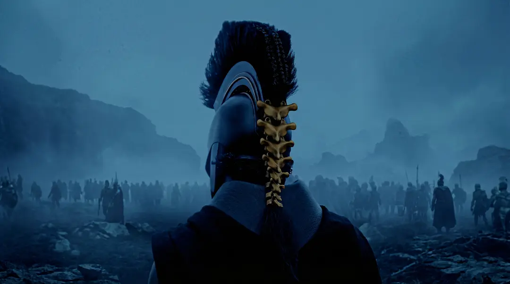

| 导演 | 克里斯托弗·诺兰 |
| 编剧 | 克里斯托弗·诺兰 |
| 原著 | 荷马《奥德赛》 |
| 制片 | 艾玛·托马斯 诺兰 |
| 摄影指导 | 霍伊特·范·霍伊特马 |
| 剪辑 | 詹妮弗·拉梅 |
| 配乐 | 路德维希·约兰松 |
| 片尾曲 | 《When I''m Home》 |
| 片长 | 173 分钟 |
| 预算 | 2.5 亿美元 |
| 评级 | R 级（MPAA） |
| 国别 | 美国 / 英国 |
| 拍摄地 | 希腊 / 摩洛哥西撒哈拉 / 西西里 |
| 摄影机 | IMAX MSM 9802（70mm 胶片） |
| 画幅 | 1.43 / 1.90 / 2.20 / 2.39 / 1.85 |
| 全球票房 | $11.05 亿（截至 8 月 9 日） |
| 开画周末 | $2.641 亿（诺兰个人最高） |
| 马特·达蒙 | 奥德修斯 伊萨卡国王 |
| 安妮·海瑟薇 | 珀涅罗珀 伊萨卡王后 |
| 汤姆·赫兰德 | 忒勒玛科斯 |
| 罗伯特·帕丁森 | 安提诺俄斯 求婚者 |
| 露皮塔·尼永奥 | 海伦 / 克吕泰涅斯特拉 |
| 赞达亚 | 雅典娜 / 特洛伊女祭司 |
| 查理兹·塞隆 | 卡吕普索 |
| 萨曼莎·莫顿 | 喀耳刻 |
| 约翰·雷奎扎莫 | 欧迈俄斯 牧猪奴 |
| 本尼·萨弗迪 | [待确认] |
在烂番茄 94%、Metacritic 88 分的背后，本片引发了一场罕见的文化辩论——不仅是影评人在讨论，古典学家、翻译家、政治学者乃至希腊总理都加入了对话。一部好莱坞大片能引发如此深度的公共讨论，本身已说明它超出了单纯的娱乐范畴。
诺兰做了一件几乎不可能的事：将西方文学的源头文本——一首三千年前的、片段式的、充满神明干预的史诗——转化为一部 173 分钟的 R 级商业大片。他做到了这一点，但代价是什么？
代价是系统性地剥离了原诗中的暧昧、幽默、性感与道德复杂性。荷马的奥德修斯不是一个简单的英雄——他屠城、他欺骗、他哭泣，他回到家中时满手鲜血。诺兰给了观众一个更「干净」的奥德修斯——一个被创伤困扰的、可以被现代观众认同的领袖。这个选择是明智的商业策略，但正如古典学家艾米莉·威尔逊所言，它「对《奥德赛》的主要主题没有说出任何令人信服的话」。
然而在另一个层面上，影片的成就同样不容忽视。霍伊特·范·霍伊特马的 IMAX 70mm 摄影让海上风暴和冥界深渊有了物理性的压迫感，这是任何家庭影院都无法复制的体验。约兰松的配乐将古希腊乐器编入现代交响织体，暗涌着古典悲怆。演员群像——从达蒙的内敛到帕丁森的油滑——每一个角色都立体可信。
本刊的判断是：这不是一部完美的荷马改编，但它是一部值得在大银幕前认真对待的电影。它的缺陷——对原著的道德化简、对女性角色的削弱——是真实存在的；它的成就——视觉奇观、叙事野心、对文明秩序主题的当代呼应——同样真实。如果条件允许，IMAX 70mm 是首选格式；如果只看普通版本，它仍然值得一次专门的院线之行。因为在一个超级英雄和续集主导的时代，一部严肃的史诗电影值得被认真观看、认真讨论——哪怕这种讨论最终指向它的不足。
§1 去神话化
诺兰一贯是理性的信徒。从《星际穿越》的物理方程到《信条》的时间逆转，他拒绝让「魔法」成为叙事的万能解药。在《奥德赛》中，他以字幕「在一个显然属于魔法的时代」开场——然后系统性地剥除神话的超自然性。雅典娜的现身不再确定是神迹，而被模糊化为可能的心理投射；独眼巨人的岛屿可能是真实的地理坐标，也可能只是创伤记忆的变形。诺兰在接受《时代》采访时表示，他的方法近似于《星际穿越》——「最好的推测是什么，我如何利用它在银幕上创造一个世界？」
这种「去神话化」策略引发了截然不同的评价。《纽约客》的贾斯廷·张给出了精辟的辩护：
但《纽约书评》的古典文学与电影双栖批评家丹尼尔·门德尔松（文章标题「巧妙的编织」）与《纽约客》的理查德·布罗迪则从相反方向指出了问题。布罗迪认为诺兰「把一首史诗变成了散文」，通过给奥德修斯增添现代式的负罪感，赋予故事「一种容易消化的现代性」——这是在「为当代观众赎罪奥德修斯」。他特别引用了原诗第九卷中的 Cicones 段落：奥德修斯平淡地叙述自己屠城、杀男人、瓜分俘虏女人和财物——而影片对这种原始暴力做了道德漂白。
§2 记忆与身份
卡吕普索用莲花剥夺奥德修斯的记忆——这一设定将十年漂泊转化为一个关于身份碎裂的故事。马特·达蒙饰演的奥德修斯不再只是英雄，更是一个被遗忘慢慢侵蚀的男人：他忘记了自己是谁，忘记了回家的路，甚至忘记了为什么要回家。这与诺兰从《记忆碎片》到《信条》一以贯之的母题形成呼应——人是由记忆构成的，失去记忆就失去了自我。
非线性叙事在这里不只是风格选择，而是对「创伤如何打破时间感知」的形式表达。影片在三条时间线之间交叉剪辑：伊萨卡岛上珀涅罗珀与求婚者的对峙、忒勒玛科斯寻访墨涅拉俄斯的旅程、奥德修斯被困卡吕普索岛屿的当下——时间感被刻意模糊，正如创伤幸存者无法将事件排列成线性叙事的体验。
《综艺》的盖·洛奇对影片的感官冲击力给予了高度评价，同时也坦承了它在情感距离上的局限：
洛奇的评价点出了影片最核心的矛盾：它的感官冲击力无可辩驳，但情感层面保持着一种刻意的距离。这既是诺兰风格的延续，也是古典主义者的批评焦点——荷马的原诗恰恰以情感的直接性和亲密性著称。珀涅罗珀织布又拆布的夜夜煎熬、奥德修斯赤身裸体上岸时被公主瑙西卡发现的羞耻、老狗阿尔戈斯在主人归来时咽下最后一口气的悲伤——这些场景在影片中要么被删减，要么被重新框定在创伤叙事的框架内。
《独立报》的克拉丽丝·劳赫雷称之为「诺兰的最佳影片」，《每日电讯报》的罗比·科林给出五星评价，而《苏格兰人报》的阿利斯泰尔·哈克尼斯捕捉到了影片中一个被多数评论忽略的政治维度——待客之道（xenia）的崩溃：
在荷马的史诗中，xenia——神赐的主客之礼——是文明秩序的基石。波塞冬的愤怒不只因为奥德修斯刺瞎了他的儿子波吕斐摩斯，更因为这一行为本身是对 guest-friendship 的根本亵渎。求婚者在奥德修斯家中肆意妄为、消耗他人财富，同样是对 xenia 的系统性违反。诺兰敏锐地捕捉到了这一主题与当代世界的关联——当《卫报》的约瑟夫·厄普写道诺兰「担忧礼貌的终结将摧毁文明」时，他指向的不只是一个古希腊故事，而是一则关于当下的寓言。
§3 古典学家的审视
罕见的一幕：古典学家们集体下场评论一部商业大片。这场讨论的深度和激烈程度，使本片成为近年来罕见的学术公共事件——三位重量级学者从各自的专业视角给出了截然不同的评价。
剑桥大学教授玛丽·比尔德在《泰晤士报》撰文并在《卫报》播客上展开讨论。她称赞影片规模，但核心批评一针见血：
比尔德特别指出，公主瑙西卡、斯巴达王后阿瑞忒等关键女性角色被删减，角色关系「处理得软弱无力」。她此前一直主张「没有电影真正攻克了《奥德赛》」，本片并未改变她的判断。
古典学家艾米莉·豪泽在《卫报》的专文中从另一个角度展开批评。她逐一列举了影片对原诗的修改：省略了招致波塞冬诅咒的傲慢之举（奥德修斯刺瞎独眼巨人后炫耀真名，正是这一 hubris 引发了神的愤怒）；给求婚者配备了武器（原诗中他们手无寸铁，这使得奥德修斯最后的屠杀更加残酷不对称）；改变了被处决女奴的命运；添加了原诗中不存在的悔恨终章。她的结论是：
§4 译者之怒：艾米莉·威尔逊
最激烈的批评来自艾米莉·威尔逊——她 2017 年的《奥德赛》译本是影片的官方灵感来源之一。在《伦敦书评》的长文中，威尔逊的措辞近乎严厉：
威尔逊的批评不只是学术性的——她也批评了在西撒哈拉拍摄的选址决定，认为诺兰在「使针对原住民撒拉威人的持续暴力正常化」。这引发了作家乔伊斯·卡罗尔·欧茨在社交媒体上的反驳，认为威尔逊的评论带有「傲慢的优越感」——一场罕见的文学界公共论战。
这场论战本身就值得深思。威尔逊不是普通的古典学者——她是历史上第一位将《奥德赛》完整翻译成英文的女性，她的译本以对 enslaved women 等词汇的精确纠正著称。她的不满，某种意义上是创作者对创作者的不满：她花了数年让荷马的语言在当代英文中复活，而诺兰则用 2.5 亿美元把它简化为一场视觉奇观。
但平心而论，诺兰的改编并非全无道理。荷马的叙事确实带有大量不适合当代观众的道德前提——奴隶制的正当性、女性作为财产的地位、英雄暴力的荣耀化。如何在尊重原著与面向当代观众之间取得平衡，是每一个经典改编者面临的两难。《洛杉矶时报》的艾米·尼科尔森给出了或许是最公允的评价：
尼科尔森的观察揭示了一个关键：诺兰从未打算拍一部「忠实的改编」，他要拍的是一部「诺兰式的奥德赛」。正如《波士顿环球报》的奥迪·亨德森所言，影片「和《埃及艳后》一样太把自己当回事了」——但这恰恰也是它的力量来源。在一个充满反讽和自我解构的时代，一部完全严肃的史诗本身就是一种立场宣示。
§5 《电影手册》的凝视
法国《电影手册》（Cahiers du Cinéma）9 月号刊登了拉斐尔·尼夫雅耶的长篇评论，提供了一个独特的欧陆视角。与英美影评集中在「是否忠实于荷马」的争论不同，法国评论界更关注的是结构问题：诺兰如何处理原诗的片段式（episodic）叙事结构？
《奥德赛》原作本质上是一系列岛屿冒险的串联——奥德修斯从一个岛屿漂到另一个岛屿，每一座岛屿都是一个独立的冒险单元。这种结构对现代电影叙事来说是致命的挑战：它缺乏传统意义上的「三幕剧」弧线和角色发展曲线。尼夫雅耶抓住了这一点：
诺兰的解决方案是用记忆缺失和创伤叙事作为粘合剂，将散落的岛屿冒险连接成一条心理线索。这种方法在法国获得了更多理解——《首映》（Première）杂志报道了法国开画首日 23 万观影人次的数据（超过《奥本海默》首日 16 万），将其称为现象级开画。
§6 文明的裂隙
将各篇评论综合来看，一个超越「忠实与否」的深层主题浮现出来：《奥德赛》本质上是一个关于文明秩序崩塌与重建的故事。伊萨卡岛上的求婚者不是简单的反派——他们是 xenia（古希腊神圣的主客之礼）的违反者。他们在别人的家中消耗他人的财富，密谋杀害主人的儿子——这正是社会契约瓦解的症状。
当《卫报》的约瑟夫·厄普写道诺兰「担忧礼貌的终结将摧毁文明」时，他指向的是一个跨越三千年的命题：任何一个社会，当它不再尊重最基本的待客之道——当主人不再善待客人、当陌生人不再被视为潜在的朋友而是潜在的威胁——它就已经在走向瓦解的路上。
这不是一个关于古希腊的命题。这是一个关于当下的命题。
§7 画幅即叙事：IMAX 70mm 的必要性
本片同时存在五种画幅——这不仅是技术规格的罗列，更是一种叙事工具的运用。IMAX 70mm 的 1.43:1 画面在海上风暴和冥界场景中纵向展开：那多出来的垂直空间让波涛有了物理性的压迫感，让深渊有了向下延伸的恐怖。当画面切换到 2.39:1 的宽银幕时——在伊萨卡岛上的室内政治场景中——空间的收紧本身就在传递信息：当画幅变窄，世界也在收窄。
全球仅 41 块银幕能呈现 IMAX 70mm 格式。为了增加这个数字，IMAX 公司专门寻找、翻修并安装了闲置的 IMAX 70mm 投影机，同时培训了 60 名新的放映师——这是自《奥本海默》以来 IMAX 基础设施最大规模的扩容。IMAX 连续七周售罄，股价创历史新高。这不是营销噱头——这是观看本身成为一种集体仪式的证据。
但 IMAX 的必要性不仅在于画面尺寸，更在于胶片本身的质感。70mm 胶片的分辨率相当于数字的约 18K——远超任何当前数字放映系统。更重要的是，胶片的颗粒感和色彩响应带有一种数字无法复制的「物质性」——它让画面感觉像是一幅被物理性地绘制在银幕上的图像，而非一堆像素的排列。诺兰对胶片的坚持，在这个流媒体主导的时代，本身就是一种近乎顽固的美学宣言。
§8 摄影：范·霍伊特马的造光术
这是诺兰与荷兰裔摄影师霍伊特·范·霍伊特马的第四次合作（此前为《星际穿越》《敦刻尔克》《信条》）。范·霍伊特马的核心贡献在于自然光的使用——他尽可能避免人造补光，转而利用黄金时段的自然光线、火把、月光等环境光源来拍摄。这种选择在《奥德赛》中获得了额外的意义：古希腊世界没有电灯，所有的光照都来自太阳、月亮和火焰。摄影的自然主义与叙事的去神话化形成了完美的呼应。
冥界段落是全片摄影的高光时刻——范·霍伊特马用极低照度和冷色调创造了一个几乎纯黑的世界，只有奥德修斯手中的火把提供微弱的暖色光源。在 IMAX 70mm 的 1.43:1 画面中，这种黑暗几乎是物理性的——观众可以「感受」到冥界的寒冷。
§9 剪辑：拉梅的非线性编织
詹妮弗·拉梅是诺兰自《敦刻尔克》以来的御用剪辑师。她的标志性手法是交叉剪辑的节奏控制——三条时间线不是按幕次分割，而是按照情绪和主题的逻辑交织。在《敦刻尔克》中，她用谢泼德音调式的加速来创造紧迫感；在《奥德赛》中，她用相反的策略——减速。当奥德修斯在卡吕普索的岛上失去记忆时，剪辑节奏也随之变慢，仿佛时间本身在凝固。
但有批评指出，部分对话场景的剪辑节奏过于急促，导致观众难以听清台词——这是诺兰影片一贯的声音问题（从《信条》到《星际穿越》都存在）。BBC 的报道指出，「虽然负面评价很少，但部分评论者表示他们在某些场景中听不清对话。」
§10 配乐：约兰松的古典织体
路德维希·约兰松继《奥本海默》后再次与诺兰合作。他的方法不同于汉斯·季默的合成器美学——约兰松选择了真正的古希腊乐器：里拉琴、奥洛斯管和定音鼓被编入现代交响乐团的织体中。这些古老乐器的音色与管弦乐的厚度形成张力——仿佛两个时代在同一个声场中对话。
片尾曲《When I''m Home》由约兰松作曲，在片尾字幕滚动时播放——这是诺兰电影中罕见的配有歌词的曲目。这首歌的旋律线索贯穿了整部影片的配乐，但直到结尾才以完整的人声形式出现——正如奥德修斯的记忆在影片结尾才完整回归。
§11 声音设计：风暴的物理性
虽然部分对话的清晰度受到批评，但影片的环境音效设计堪称顶级。海上风暴段落中，风声、浪声和船体断裂声被分层混音，创造出一种近乎触觉的声音体验。在 IMAX 影厅的全景声系统中，观众可以感受到波浪从左后方涌来、从右前方退去的运动轨迹——这种空间感与 1.43:1 画幅的垂直展开形成了视听层面的双重压迫。
冥界段落的声音设计同样值得注意——那里几乎是无声的，只有偶尔的呼吸声和远处隐约的低语。这种声学真空与冥界的视觉黑暗形成呼应，创造了一种少有的、让观众「听到寂静」的电影体验。
中国院线：8 月 14 日起全国约 800 块 IMAX 银幕公映。8 月 1–2 日北京、上海、广州、深圳提前 IMAX 点映。IMAX 70mm 放映已延期至 9 月 16 日。
§1 一段十七分钟的采访如何成为文化事件
2026 年 7 月 30 日，北京，环球影业的宣发晚宴。诺兰正在经历《奥德赛》全球巡回采访的第 N 场流水线问答——很多问题他已经回答了几十遍，脸上挂着一种职业性的礼貌微笑。然后，原本名不见经传的中国播客主播仲树，用一个问题打破了这个节奏。
仲树的身份颇为特殊：她是政治哲学方向的博士生，独立播客《独树不成林》的主理人，同时在 B 站运营深度内容频道。她的播客第 160 期做过《奥德赛》的深度解读——正是这期节目被环球影业的一位工作人员听到，将一个宣发期专访名额给了她。7 月 31 日采访视频发布，先被一位美国诺兰粉丝搬运到 YouTube，接着游戏圈顶流 Geoff Keighley 转发背书。一天之内，播放量突破三千万。X（原 Twitter）和 Reddit 上的讨论帖获得上千万次观看，西方观众称之为「教科书级别的采访」。
这段仅 17 分钟的对话之所以在英文世界引发如此剧烈的反响，与其说是因为诺兰说了什么新东西，不如说是因为它暴露了西方娱乐媒体采访生态的贫困。当好莱坞的 junket（宣传巡回采访）已经变成流水线上千篇一律的「拍摄这部电影的感受如何」时，一个来自中国的、用政治哲学框架提问的年轻学者，让西方观众看到了一种几乎已经被消灭的采访形态——对话者真正读过原著，真正在思考，真正把被采访者当作一个有思想的人而非宣传工具。
但在这个直观的解释之外，这场传播事件还暗含着一个需要仔细审视的维度。
西方观众对这段采访的反应至少包含三个层次：对采访质量的真诚赞赏；对本国娱乐媒体工业标准化提问的间接批评（「为什么我们的记者不能这样提问？」）；以及一种值得审慎对待的惊讶——「来自中国的年轻女学者居然如此有深度」。
这种惊讶本身携带着爱德华·萨义德（Edward Said）所描述的东方主义（Orientalism）的残余结构：西方世界长期以来将自己定位为知识生产的中心，而将东方视为知识的对象——而非知识的主体。当仲树以一个知识生产者的身份登场时——不是被采访的中国导演、不是被「发现」的中国艺术家、不是一个等待西方阐释的「东方奇观」——她颠覆了这个隐含的权力结构。西方观众的惊讶，某种意义上是对这种颠覆的间接确认：惊讶之所以发生，恰恰因为它违背了某种未被言明的预期。
这不是说西方观众的反应是恶意的——恰恰相反，大量的反应是真诚的欣赏和赞誉。但萨义德的洞见在于，东方主义不是一种有意识的敌意，而是一种结构性的认知习惯：它不需要任何人「有意歧视」，它只需要一个隐含的预设——知识、深度、思想能力天然地归属于某些中心而不是边缘——就足以让一个中国学者的深度提问变成「值得惊讶」的事件。
更微妙的层面在于传播链本身。这段视频的「引爆」依赖于几个节点：美国诺兰粉丝的搬运、游戏圈顶流 Keighley 的转发、Reddit 和 X 上的病毒式扩散。在这些节点中，没有一个是中国的平台或机构——视频的「价值」是在西方传播网络中才被「认证」的。换句话说，仲树的采访在中国文化圈已经存在，但它需要被西方观众「发现」和「传播」之后，才获得了全球性的可见度。这种「中心—边缘」的传播结构，本身就是文化权力不对称的体现。
这一观察不应该被简化为一种指责——问题不在于「西方观众不应该欣赏这段采访」。问题在于：为什么一段中国学者用英文进行的、基于西方经典的哲学讨论，需要通过西方网络的「认证」才能被全球看见？如果这场对话是在中文语境中进行的，它还会获得同样的关注吗？这些问题的答案指向一个更根本的结构——在全球文化生产的权力版图中，阐释权仍然高度集中在少数中心。
§2 「吟游诗人」：一个方便但不准确的类比
仲树在采访开篇将诺兰比作「吟游诗人」（bard）——荷马传统的口头吟诵者，将故事从一代传到下一代的人。这个类比在传播中被反复引用，几乎成了这则采访的标志性标签。它直觉上很美：导演就是当代的荷马，电影就是当代的口头史诗，IMAX 银幕就是当代的篝火广场。
但这个类比是有问题的。首先，它隔绝了文本的环境和庞大的时代语境。荷马（如果存在一个「荷马」的话）不是一个有个人作者意志的创作者——他/他们是一个传统的承载者，其「创作」本质上是在既定的韵律、程式和神话框架内的即兴编织。诺兰恰恰相反：他是一个有极强个人风格的作者导演，他的《奥德赛》不是对荷马的「传颂」，而是对荷马的挪用和重写——正如《洛杉矶时报》的尼科尔森所言，他在「切割、重组荷马」。将一个对文本进行颠覆性改编的作者称为「吟游诗人」，等于取消了「吟游诗人」这个词的历史特定性。
其次，它将流行文化工业的中心人物浪漫化为前现代传统的继承者。诺兰不是民间的歌者，他是好莱坞最成功的商业导演之一，拥有 2.5 亿美元的预算和全球最大的发行渠道。称他为「吟游诗人」，某种程度上是在用诗意的修辞遮蔽电影工业的权力结构。这不是传颂，这是制作。
但为什么这个不精确的类比获得了如此强大的传播力？在社交媒体环境中，一个概念的传播力与它的精确性往往成反比。「诺兰 = 吟游诗人」直觉上美丽、跨文化通用、不需要专业知识就能理解。它之所以有效，不是因为它是精确的学术类比，而是因为它将一个复杂的文化现象压缩为一个可记忆、可转发的修辞锚点。这本身就是关于当代文化传播的一个观察：在信息过载的时代，「直觉性美丽」获得了病毒传播的能力，而精确性反而成了传播的障碍。
§3 追溯一条创作谱系
在接受《洛杉矶时报》采访时，诺兰说了一段罕见地坦诚的话：「多年来，我一直在所有的电影中讲述这个故事。这是一个关于家庭的故事、爱情的故事、复仇的故事、战争的故事，也是一个成长的故事。对我来说，这是一个极其根本的原型文本。」
这段话提示了一个重要的观察角度：要理解《奥德赛》，不能把它当作一部孤立的改编作品来分析。它是诺兰二十五年创作谱系的汇聚点——这个谱系反复处理同一个母题：一个人在不可逆的因果链条中挣扎，试图回到一个道德的零点。
这条脉络可以追溯到 1997 年。彼时尚在大学读书的诺兰拍了一部三分钟的黑白短片《蚁蛉》（Doodlebug）——一个男人在房间里追杀一个微小的人形生物，最后镜头拉远，他自己也只是更大一层空间里被追杀的猎物。这部学生习作已经包含了诺兰此后所有作品的精神内核：套层结构、因果闭环、以及一种无处安放的存在论恐惧。从《记忆碎片》的记忆陷阱到《盗梦空间》的梦境嵌套，从《信条》的时间逆转到《星际穿越》的黑洞引力，诺兰的人物始终被困在某种结构性力量之中——而唯一的出口是「回家」。
《星际穿越》的回家是穿越虫洞回到女儿的房间。《盗梦空间》的回家是穿越多层梦境回到孩子们身边。《记忆碎片》的回家是用主动遗忘来重建一个可生活的叙事。《敦刻尔克》的回家是三十万士兵从海峡对岸的撤退。而现在，《奥德赛》的回家是一个失忆的国王漂泊十年后回到伊萨卡——在所有的「回家」中，这一次最为古老，也最为直接。
但这一次的「回家」有一个关键的转变：奥德修斯不是凯旋的，而是溃退的。《敦刻尔克》在二战史册中被记载为一次成功的军事撤退，但电影给人的总体印象是逼仄与压抑——不是「大功告成」，而是「仓皇逃命」。《奥本海默》的主角发明了终结战争的终极武器，赢得了胜利——然后看着这个武器变成悬在人类头顶的永恒威胁。在这条脉络中，奥德修斯不是一个征服者的归来，而是一个幸存者的撤退。
正如《奥德赛》新译本的译者艾米莉·威尔逊所洞察到的：
§4 木马腹中的污浊
理解了诺兰的创作谱系，就能理解他在《奥德赛》中做出的一个看似古怪的选择：他把特洛伊木马的内部想象成一个充满排泄物的肮脏空间。士兵们藏在木马腹中数日，必然产生粪便与尿溺。在荷马的原诗中，木马计是雅典娜恩赐的智慧，是希腊人的荣耀；在诺兰的镜头里，它是一个令人作呕的幽闭空间，荣耀的背后是污浊。
这个细节是理解诺兰整个道德世界的钥匙。在他的电影中，伟大与卑劣始终是伴生的。《黑暗骑士》中的蝙蝠侠被小丑看破罩袍下藏匿的不堪人性；《致命魔术》的魔术奇观依赖于一个被隐藏的残酷代价。诺兰反复告诉观众：被称作伟大的东西，很可能依赖于某种被遮蔽的鄙陋。
这种判断根植于诺兰本人的信仰背景。他是一名天主教徒，幼年在天主教预备学校接受教育。康德的话在这里是恰当的注脚：「人性这根曲木，决计造不出完全笔直的东西。」在诺兰的世界观里，不存在纯粹的正义战争——正如不存在纯粹的伟大英雄。木马计的狡诈违反了「宙斯之法」（xenia），这个违反本身就是后续所有苦难的根源。
§5 基督教化的奥德修斯
这种道德化处理直接指向了本片在古典学界引发的最大争议：诺兰是否把《奥德赛》「基督教化」了？
在仲树与诺兰的那段采访中，她提出了一个尖锐的问题：「古希腊文化中并不存在『赎罪』这一概念。古希腊语中不存在赎罪这个词，荷马的《奥德赛》中没有赎罪，但是你的《奥德赛》中却有。你是否把《奥德赛》基督教化了？」
这个问题切中了要害。古希腊人并不把征伐视作一种罪行——他们崇尚血气（thumos），仰望光荣（kleos），视战争为关于卓越（arete）的竞赛。《伊利亚特》结尾最令人动容的一幕不是胜利者的凯歌，而是普里阿摩司来到阿喀琉斯帐中乞求儿子的遗体，阿喀琉斯宽大地应允——这不是赎罪，而是对命运的共同承受。希腊古人将死亡视作命运，而命运早已在神谕中揭示。
诺兰的奥德修斯却被注入了一种希伯来式的「忏悔意识」——他为一场生灵涂炭的悲剧而自责。这种转变是深刻的：它将一个关于行动与命运的希腊故事，改写成了一个关于罪感与救赎的基督教叙事。剑桥大学的玛丽·比尔德指出了另一个维度：荷马的奥德修斯是一个「爱玩闹、擅反讽、机智风趣、擅长危险的欺骗、有时甚至彻头彻尾说谎的角色」，而诺兰电影里的主人公「要单薄得多，一根筋，甚至有些木讷」。正是这种「一根筋」，凸显了贯穿全片的道德焦灼感——一种荷马世界完全不存在的情绪。
诺兰影片中女性角色的处理也印证了同一逻辑。查理兹·塞隆的卡吕普索被剥离了原著中的诱惑力，变成了一个安静的倾听者；萨曼莎·莫顿的喀耳刻完全失去了性魅力；即使是塞壬的段落，诺兰也只给了一个雾霭沉沉的远景，观众甚至听不到那致命的歌声。露皮塔·尼永奥饰演的海伦脸上有伤疤——美本身的虚构性被揭露，海伦只是战争借口的棋子。诺兰不希望他的影片中出现会分散注意力的妩媚，因为这会让那种指定的「严肃性」打折扣。从这个角度看，选角争议的焦点被放错了——问题不在尼永奥的种族，而在于诺兰根本不想让任何形式的「美」干扰他的道德叙事。
§6 英雄的困境：从《拿破仑》到 KCD2
如果将视线从《奥德赛》本身扩展到更广阔的文化图景，一个值得考察的问题是：当代文化产品如何处理「英雄」这个概念。
雷德利·斯科特的《拿破仑》（2023）在全球仅获 2.22 亿美元票房（预算 1.3–2 亿），烂番茄 58%。华金·菲尼克斯的波拿巴矮小、阴郁、情绪化。观众的普遍不满不是「奇观不够」，而是「这个拿破仑不像拿破仑」。《角斗士 2》（2024）全球 4.62 亿美元（预算高达 2.1–3.1 亿），试图复制 2000 年原作的「复仇与荣耀」叙事，但时代语境已经改变。这两部影片的失利当然不能简单归因于「观众拒绝英雄」——影片自身的节奏、剧本质量、制作成本失控都是重要变量。但它们至少提示了一个问题：经典意义上的英雄叙事（伟人的崛起、荣耀的凯旋）在今天的院线环境中越来越难以获得广泛的共鸣。
与此同时，另一种文化产品却在不同的方向上获得了成功。Warhorse Studios 的《天国：拯救 2》（Kingdom Come: Deliverance 2，2025）以 15 世纪波西米亚为背景，坚持无魔法、无奇幻、一切武器盔甲建筑均有考古学依据的极致历史考据。它在第一人称视角中消除了「观看」与「参与」的距离——玩家不是在旁观历史，而是在操作历史。它的成功暗示了一个值得继续追问的可能性：对「历史真实」的渴望并未消失，但可能正在从电影迁移到互动媒介——电影负责情感与象征层面的真实，游戏负责物理与物质层面的真实。
回到电影内部，诺兰的《奥德赛》（$11.05 亿）和维伦纽瓦的《沙丘》系列（《沙丘 2》$7.15 亿）的商业成功，并不否定「英雄叙事面临困境」的观察——因为它们的成功恰恰建立在对英雄叙事的根本性改写之上。诺兰把奥德修斯从凯旋的英雄改写为创伤幸存者；维伦纽瓦把保罗·厄崔迪从救世主改写为被命运诅咒的悲剧人物。两者的策略是一致的：将英雄的维度降低到普通人的尺度，让观众可以将自己的焦虑投射其上。
这与马克·费舍（Mark Fisher）在《资本主义现实主义》（Capitalist Realism, 2009）中描述的状况形成对话。费舍认为，当代人越来越难以想象现存秩序的替代方案——这种想象力的丧失不仅体现在政治领域，也体现在文化生产中。当观众无法想象「真正的替代方案」时，他们可能也无法想象「真正的英雄」——因为英雄的本质恰恰是对现状的根本性超越。如果这种超越变得不可想象，英雄叙事就只能以两种方式存活：要么被反讽化（漫威式的自我解构），要么被内化（诺兰式的创伤叙事）。但这个判断需要谨慎对待，因为它本身也可能是一种无法验证的宏大叙事。
§7 尾声：归乡即救赎
哲学家齐泽克（Slavoj Žižek）评价《奥德赛》时说了一句出人意料的话：「这是一部气质克制、近乎室内剧风格的作品，有些片段甚至让我联想到 B 级片。」这个评价指向了一个容易被 IMAX 营销话术遮盖的事实：尽管影片在技术上追求极致的宏大，它的情感基调却是极其私密的。阴暗的洞穴、低矮的房屋、扑烁的烛火、迷蒙的海岸——奥德修斯的旅程不像是一个英雄的远征，更像是一个人行走在他自己的梦境之中。
这种「宏大中的私密」恰恰是诺兰从《黑暗骑士》到《奥本海默》一以贯之的创作逻辑。他的蝙蝠侠三部曲表面上是超级英雄电影，内核是一个关于创伤、恐惧和道德极限的室内剧。《奥本海默》表面上是原子弹之父的传记，内核是一个人面对自己创造物时的存在论恐惧。诺兰的所有「大」电影——大预算、大画幅、大场面——最终都在做同一件事：用最大的技术体量，讲述最小的道德困境。
从《伊利亚特》到《奥德赛》的转化，在这个意义上就是诺兰整个创作谱系的缩影：《伊利亚特》象征征服和行动，《奥德赛》象征收拢和归返。诺兰在一次采访中承认，他「根本不相信特洛伊战争是一场正义的战争」——结合《敦刻尔克》的退却和《奥本海默》的恐惧，他或许不相信任何一场战争具有绝对正义性。在《奥德赛》所处的「青铜时代」到「黑铁时代」的过渡段，诸神已经退场，荣耀已经消散，剩下的只是人类卑微的生存和凭借狡猾的小聪明取得的实用主义胜利。
诺兰为现代人——也是为自己——找到的解法，是从《伊利亚特》到《奥德赛》的转向：以谦卑替代骄傲，以寂静替代骚动。在这条返乡的道路上，归来的故乡将终结错乱的因果，终结人在汪洋大海中绝望的颠簸。这不是凯旋，而是一场漫长的、充满代价的撤退——一场斯多葛式的归乡。
这是一种什么样的归乡？它不是回到一切如旧的伊萨卡，而是回到一个道德的零点、因果的零点。奥德修斯必须先记起自己是谁——记起自己的罪、自己的失去、自己亲手制造的因果——然后才能真正回到那个最初的、无玷的原乡。在诺兰的电影宇宙中，《记忆碎片》的伦纳德用遗忘来逃避这个记忆，《盗梦空间》的柯布在梦境深处找到了自己的卡吕普索，《星际穿越》的库珀穿过黑洞回到女儿的房间——他们都在做同一件事：从遗忘的诱惑中挣脱，重新承担起自己的记忆和因果，然后回家。
奥德修斯的归乡，就是诺兰所有电影的归乡。
不是一声巨响，而是一声呜咽。」
撰稿：场刊编辑部 · 2026 年 8 月 11 日
仲树采访来源：B 站「独树不成林」频道 / X / Reddit
但讲述英雄故事的需要，永远不会消失。

2026 年 8 月 11 日 v3.2
数据来源：Wikipedia · RT · Metacritic
Variety · Guardian · THR
Cahiers du Cinéma · Independent · Scotsman
New Yorker · New York Review of Books
仲树采访：B 站「独树不成林」/ X / Reddit
FT 中文网：《奥德赛》：克里斯托弗·诺兰在恐惧什么？
参考：Edward Said, Orientalism (1978)
Mark Fisher, Capitalist Realism (2009)
票房截至 2026.08.09
影评引用均附来源链接，可点击查看原文
© 2026 The Programme
仅供观影参考 电子场刊
ren1003497048-del.github.io/changkan
往期总目 · Archive